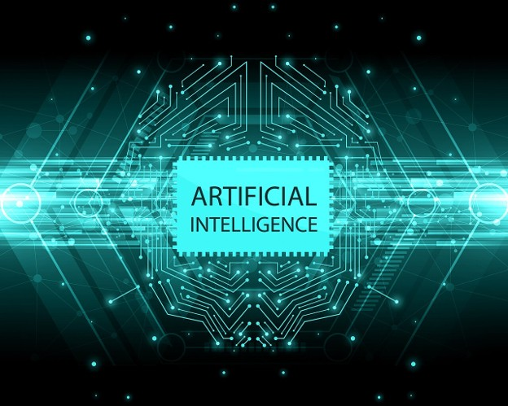

Our mission
Welcome to AI Educator, where we teach you about AI for no charge! We have a page to learn what AI is (This page right here!), a page to tell you the history of AI, and a page to give you tips and tricks for how to use AI and make it do what you want it to do.

What AI is
Artificial intelligence, also known as AI, is a computer program that is able to accomplish tasks that normally require human logic. AI comes in many different forms, there is text-based AI, which generates text-based responses. An image AI generates images. But there are also types of AI that don’t just generate responses, they just do things that require human logic. An example of this is the AI that is integrated into apps that can do complex tasks.
Common AI Chatbots
An AI chatbot is an AI model that you can prompt, and it will give you a response. It is very common for an AI chatbot to be a text-based AI. The table below shows some (but not all) of the most common AI chatbots used in our current day.
| Chatbot name | Google Gemini | ChatGPT | Claude | Microsoft Copilot |
| Company | OpenAI | Anthropic | Microsoft | |
| Chatbot URL | https://gemini.google.com | https://chatgpt.com | https://claude.ai | https://copilot.microsoft.com |
Some Capabilities of AI
AI is capable of many different tasks! Some of these tasks include:
- Computer Programming
- Image Generation
- Text Generation (Creative Writing)
- Giving feedback
- Helping with research
- And many more!